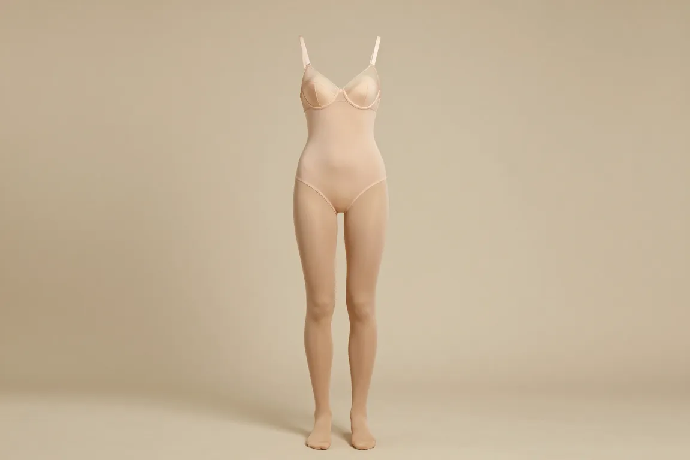

The soft underwear of the youth years: a sheer, unwired bra with no pad and no seam, stretch bodysuits and tights. They are cut to follow the natural body and to show no line under the dress.

Core thesis
Underwear should follow the body and not shape it: a soft cup, a thin cloth and a skin tone that shows no line.
Design principles
Cut the cup from one piece of sheer stretch cloth, with no pad and no wire.
Match the cloth to the skin tone, so that the garment shows no line under thin dress.
Knit the body in nylon tricot or elastane, so that it stretches 50 to 100 per cent and recovers.
Keep the seams to a minimum: one at the side, one at the centre, and no bone.
Make the garment light: 40 to 120 g/m² for the cup and the band.
Fasten with a simple hook at the back or no fastening at all.
Name the garment for what it is: a soft bra, a bodysuit, a pair of tights.